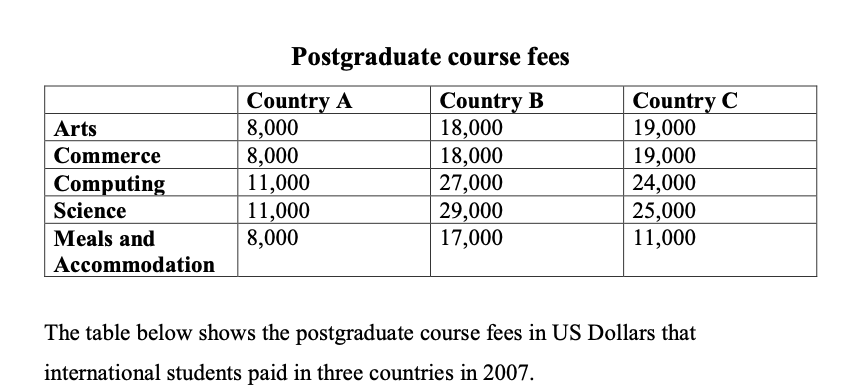

Article
Read the article, then confirm below to continue.
Is it really vital to get 8 hours of sleep a night?
The largest analysis of brain scanning data yet casts doubt on the idea that shorter sleep duration is linked to shrinkage of the brain, reports Clare Wilson.
📄 Open articleComprehension & vocab
Questions on the article you just read, plus ten key words from it.
Comprehension
1. According to the article, what widely-held idea does the new analysis challenge?
2. According to the article, what shape of curve did Fjell's team initially find between sleep duration and brain volume in the ~47,000-person dataset?
3. According to the article, what sleep duration was linked to the highest brain volume in the genetic (roughly 30,000-person) analysis?
4. According to the article, what did the longitudinal analysis of about 4,000 people over up to 11 years find?
5. According to the article, what does Anders Fjell say the population studies can and cannot tell us?
6. According to the article, what does Michael Chee suggest matters more than hitting a specific number of hours?
Vocabulary
Writing Task 1: the article
Background reading on global higher education costs — study the highlighted language before you write.
■ subject synonyms ■ useful Task 1 chunks
Global Higher Education Costs: Tuition Fees and Living Expenses Across Major Study Destinations
The cost of studying abroad as an international postgraduate student depends heavily on two main factors: the field of study and the location of the university. Tuition fees reflect the operational costs of running specific degree programs, while living expenses are shaped by local economic conditions and housing markets. Comparing costs across different countries highlights clear patterns in how universities price their degrees and how much students must spend on daily life.
1. Tuition Fee Variations Across Academic Disciplines
Universities adjust their tuition rates based on the resources required to teach each subject.
High Costs for STEM Degrees: Science, technology, engineering, and mathematics (STEM) programs are consistently the most expensive. Computing and natural science degrees require high-tech laboratories, specialized software licenses, and expensive equipment. As a result, universities charge a premium. In popular destinations like Australia or the UK, STEM tuition ranges from $25,000 to $45,000 USD per year.
Lower, Equal Rates for Arts and Business: Humanities, social sciences, and business degrees usually cost less. Because these subjects rely primarily on lecture halls and seminars rather than expensive lab facilities, institutional overhead remains low. Tuition for arts and commerce programs is typically equal within the same university, averaging $18,000 to $30,000 USD per year.
National System Differences: Overall tuition levels depend heavily on national education policies. Subsidized or public university systems in parts of Europe offer low, capped tuition fees (often $10,000 to $18,000 USD), whereas market-driven systems like the United States charge much higher rates, reaching up to $50,000 USD or more annually for specialized Master's degrees.
2. Overview of Tuition and Living Costs by Destination Tier
| Destination Category | Arts & Business Tuition (Annual) | STEM & Computing Tuition (Annual) | Living & Housing Overhead (Annual) | Financial Impact on Students |
|---|---|---|---|---|
| Low-Cost Destinations | $8,000 – $15,000 USD | $11,000 – $20,000 USD | $8,000 – $12,000 USD | Highly affordable; lower financial barriers for self-funded students. |
| Moderate-Cost Destinations | $18,000 – $25,000 USD | $24,000 – $32,000 USD | $12,000 – $18,000 USD | Balanced pricing; offers good value for high-quality degrees. |
| High-Cost Destinations | $25,000 – $40,000 USD | $35,000 – $55,000 USD | $18,000 – $28,000 USD | Maximum expenditure; heavy reliance on scholarships, savings, or loans. |
3. The Impact of Accommodation and Daily Living Costs
Beyond academic tuition, living expenses — including accommodation, food, and transportation — make up a large portion of a student's total budget.
In major global cities like London, New York, or Sydney, high housing demand has driven rental prices up significantly. In these locations, international students often spend between $350 and $600 USD per week on accommodation and basic upkeep. Over an academic year, living expenses can reach $18,000 to $25,000 USD, which sometimes equals or exceeds the tuition cost of a non-science degree. Conversely, in smaller cities or regional study hubs, living costs remain much lower ($8,000 to $12,000 USD per year), making them an attractive option for budget-conscious students.
Task 1 report
Mini exam block — write your response with the stopwatch running.
The table below shows the postgraduate course fees in US Dollars that international students paid in three countries in 2007. Summarise the information by selecting and reporting the main features, and make comparisons where relevant. Write at least 150 words.

Sample answer
Model response, with useful comparison language marked.
The table provides a comparison of postgraduate course fees paid by international students in three countries — A, B, and C — in 2007. The data include tuition costs for four academic disciplines, as well as expenses for meals and accommodation, all measured in US dollars.
Overall, Country A had the lowest total cost across all categories, while tuition fees for Computing and Science were consistently the highest in each country. Fees in Countries B and C were generally comparable for academic disciplines, but the difference in living costs between them was significant.
Tuition fees for Arts and Commerce were the same within each country, at $8,000 in Country A, $18,000 in Country B, and $19,000 in Country C. In contrast, fees for technical subjects were notably higher. Both Computing and Science cost $11,000 in Country A, but rose sharply in Country B to $27,000 and $29,000, respectively — the highest figures recorded. Country C also charged more for these disciplines: $24,000 for Computing and $25,000 for Science.
As for the living costs, Country B had the highest expenditure at $17,000, substantially more than Country C at $11,000 and more than double the $8,000 charged in Country A. This made it the only category where the difference between Country B and Country C was particularly pronounced.
Reading Practice
Open the test in a new tab, complete it, then come back here.
Speaking Part 2 & 3
Choose a topic set below. You only get one attempt per question, so make sure you're ready before you start recording.
Video & comprehension
Watch, then answer the questions below.
1. What is the main message of the speaker at the beginning of the video?
2. According to the video, why can introverts sometimes feel left out?
3. What misconception about introverts is mentioned in the video?
4. How do parties generally affect introverts and extroverts differently?
5. Why does dopamine affect introverts differently from extroverts, according to the video?
6. What activities are associated with the release of acetylcholine?
7. What is an “ambivert”?
8. What does the speaker value about having only a few friends?
9. How does the speaker describe spending time alone?
10. What is the overall conclusion of the video?
Gap Fill
Word box: solitary · flaw · extroverts · misconceptions · socialising · recharge · dopamine · over-stimulated · acetylcholine · content · sliding scale · ambivert · reflect · reconnect · attributes
1. Introverts often need time away from other people to feel comfortable and regain energy.
2. The speaker believes that introversion is not a but a gift.
3. The world often seems to reward loud and outgoing .
4. The belief that all introverts are shy or antisocial is one of the common about introversion.
5. Introverts can enjoy , just like anyone else.
6. After spending time with other people, introverts may need to by being alone.
7. gives people a feeling of energy when they take risks or meet new people.
8. Introverts can become quickly because they are more sensitive to dopamine.
9. Introverts enjoy the slower and calmer feeling associated with .
10. This chemical can make introverts feel relaxed, alert, and .
11. Personality is described as a , meaning people can lean towards one type or another.
12. Someone who has qualities of both an introvert and an extrovert is known as an .
13. Spending time alone allows the speaker to on their thoughts.
14. Quiet time helps the speaker eventually with themselves.
15. The speaker believes that the unique of introverts can be a deep and quiet strength.
Vocabulary Matching
Day 27 complete! 🎉
All 8 tasks done. Come back tomorrow for the next day.